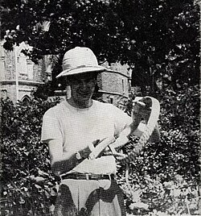

John Keel
Journalist and author, 1930 to 2009

A writer who linked UFOs with other strange phenomena and popularized the Mothman story. 1
Open in the interactive Watcher
Related
- The Mothman Prophecies Wrote The Mothman Prophecies
- Point Pleasant
Sources
- John Keel Wikipedia